扉页
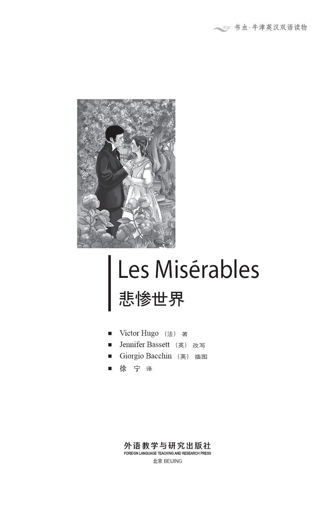
版权页
京权图字：01-2013-7795
Published by arrangement with Oxford University Press for sale in the People's Republic of China only and not for export therefrom. This edition is for sale in the mainland of China only, excluding Hong Kong SAR, Macao SAR and Taiwan.
© Oxford University Press 2012
Oxford is a registered trademark of Oxford University Press
图书在版编目（CP）数据
悲惨世界：英汉对照／（法）雨果（Hugo，V.）著；（英）巴西特（Bassett，J.）改写；（英）巴金（Bacchin，G.）绘；徐宁译．——北京：外语教学与研究出版社，2013.12
（书虫·牛津英汉双语读物）
ISBN 978-7-5135-3925-8
Ⅰ．①悲… Ⅱ．①雨… ②巴… ③巴… ④徐… Ⅲ．①英语－汉语－对照读物②长篇小说－法国－近代 Ⅳ．①H319.4：I
中国版本图书馆CIP数据核字（2013）第309186号
出版人 蔡剑峰
责任编辑 田 娜
封面设计 蔡 颖
出版发行 外语教学与研究出版社
社 址 北京市西三环北路19号（100089）
网 址 http://www.fltrp.com
版 次 2014年1月第1版
书 号 ISBN 978-7-5135-3925-8
制售盗版必究 举报查实奖励
版权保护举报电话：（010）88817519
内容简介
内容简介
19世纪30年代的法国。富人乘坐马车，用金餐具吃喝。穷人没有工作，没有食物，没有希望——他们是穷苦人，起义一触即发。法国人民还记得1789年的法国大革命。当时，民众在巴黎街头筑起街垒，死去的人数以千计。这样的时刻又要到来了吗？
这是冉阿让的故事。他坐了19年的牢，终于恢复了自由身。可是，他怎么生活，到哪里去找工作呢？像他这样一个人，还有什么希望呢？这也是沙威的故事，他是一个督察，一个残忍的人，一个冷酷的人。他的人生只有一个目标——把冉阿让再次送进大牢。这还是芳汀的故事，芳汀和她的女儿珂赛特。她们的故事是怎样改变了冉阿让的一生？这也是马吕斯的故事。他是巴黎的一名学生，做好了为起义而牺牲的准备——或是为爱情而死。最后，还有伽弗洛什——一个在巴黎街头流浪的孩子，他没有家，没有亲人，没有鞋穿……可他的脸上总是挂着笑容，心中总是有歌儿在欢唱。
不过，我们要先从冉阿让讲起……
LES MISÉRABLES
LES MISÉRABLES
France in the 1830s. The rich ride in carriages, and eat from gold plates. The poor have no work, no food, no hope – they are Les Misérables, and rebellion is in the air. France remembers the French Revolution in 1789, when the people built barricades in the streets of Paris, and the dead were counted in thousands. Is that time coming again?
This is the story of Jean Valjean. A prisoner for nineteen years, now at last he is a free man. But how can he live, where can he find work? What hope is there for a man like him? It is also the story of Javert, a police inspector, a cruel man, a hard man. He wants one thing in life – to send Valjean back to prison. And it is Fantine's story too, Fantine and her daughter Cosette. How does their story change Valjean's life? And it is also Marius's story. He is a student in Paris, ready to die for the rebellion – or for love. And last, there is Gavroche – a boy of the Paris streets, with no home, no family, no shoes... But a boy with a smile on his face and a song in his heart.
But we begin with Jean Valjean...
目录
1．Jean Valjean
1
Jean Valjean
FOREWORD
It is the year 1796, and the people of France are hungry. Not the rich people, of course. They have food, they have warm clothes, they have beautiful houses. No, it is the poor people of France...
Jean Valjean is one of these poor people. He is a young man, big, strong, and a good worker – but he has no work, he cannot find work, and he is hungry. He lives with his sister in the village of Brie. Her husband is dead, and she has seven children. It is a cold hard winter, and there is no food in the house. No bread, nothing – and seven children!
Jean Valjean is a good man, he is not a thief. But how can a man just sit there, when his sister's children cry all night because they are hungry? What can a man do?
He leaves his house at night, and goes down the village street. He puts his hand through the window of the bakery – crash! – he takes a loaf of bread, and he runs. He runs fast, but other people run faster.
France is not kind to poor people. France sends Jean Valjean to prison for five years. After four years he escapes. They find him, and bring him back. They give him six more years. Once again, he escapes, and two days later, they find him. And they give him another eight years. Nineteen years in prison – for a loaf of bread!
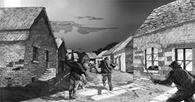
In 1815, when he leaves prison, Jean Valjean is a different man. Prison changes people. Years of misery, years of back-breaking work, years of cruel prison guards. These things change a man. Once there was love in Jean Valjean's heart. Now, there is only hate.
One evening in October, in the year 1815, there was a knock on the door of the bishop of Digne's house.
'Come in,' said the bishop. The bishop was a kind man; everyone in the town of Digne knew that. Poor people, hungry people, miserable people – they all came to the door of the bishop's house.
The bishop's sister looked at the man at the door that night, and she was afraid.
'Look at him!' she whispered to the bishop. 'He is a big man, and a dangerous one. He carries a yellow card, so he was once a prisoner – a bad man.'
But the bishop did not listen. 'Come in, my friend,' he said to the man at the door. 'Come in. You must eat dinner with us, and sleep in a warm bed tonight.'
The man stared at the bishop. 'My name is Jean Valjean,' he said. 'I was a prisoner in Toulon for nineteen years. Here is my yellow card, see? People everywhere shut their doors in my face – but not you. Why not?'
'Because, my friend, in the eyes of God you are my brother,' said the bishop, smiling. 'So, come in, and sit by our fire.' The bishop turned to his sister. 'Now, sister, our friend Jean Valjean needs a good dinner. Bring out the silver dinner plates. It's a special night tonight.'
'Not the silver plates!' whispered the bishop's sister. Her eyes went quickly to Jean Valjean, then back to the bishop's face.
'Yes, the silver plates,' said the bishop. 'And the silver candlesticks too. The church has these beautiful things, but they are for our visitors. And our visitor tonight must have only the best.'
And so Jean Valjean sat down with the bishop and his sister and ate from silver plates. He ate hungrily – it was his first good meal for weeks.
'You're a good man,' he said to the bishop. 'Perhaps the only good man in France.'
But Valjean could not take his eyes away from the silver plates. After the meal, the bishop's sister put the silver plates away, and Valjean's eyes watched. He saw the place, and he remembered it.
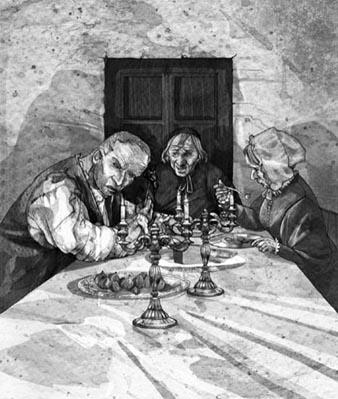
Valjean could not take his eyes away from the silver plates.
In the night, in his warm bed in the bishop's house, he thought about the plates. They were big, heavy – so much silver in them! 'I can sell those plates,' he thought. 'For just one of them, I can eat well for months!'
Nineteen years in prison is a long time, and nineteen hard years change a man.
By morning Valjean was a long way from the bishop's house. But how do you carry big silver plates? How do you hide them? People in Digne began to whisper...
'Did you see him? That big man, carrying six silver plates? Where did he get them from, eh?'
'Those plates came from the church. A man like that doesn't have silver plates!'
'No! And he carries a yellow card, did you see? So he was a prisoner once. He's a thief – he stole those plates!'
The police heard the whispers. They went after Jean Valjean, found him, and took him back to the bishop's house in the afternoon. But there, they had a surprise.
'My dear friend!' the bishop said to Jean Valjean. 'I'm so pleased to see you. You forgot the candlesticks! I gave you the silver plates and the candlesticks, you remember? but you forgot to take the candlesticks when you left.'
'But this man is a thief!' said one of the policemen.
'No, no, of course not,' said the bishop, smiling. 'I gave the silver to Monsieur Valjean.'
'You mean he can go? He is free?' said the policeman.
'Of course,' the bishop said.
All this time Jean Valjean stared at the bishop, and said not one word. The policemen went away, and the Bishop of Digne went into his house and came out again with the two silver candlesticks. They were tall and heavy and beautiful. The bishop put the candlesticks into Jean Valjean's hands.
'Jean Valjean, my brother,' he said. 'You must leave your bad life behind you. This is God's silver, and I am giving it to you. With it, you can begin a new, good life. I am buying your soul for God.'
Jean Valjean left the town of Digne, with his silver plates and his silver candlesticks. Suddenly, he was a rich man, but he did not understand why.
'What's happening to me?' he thought. 'Everything is changing. How can I hate people when this bishop is so good to me? What shall I do? How shall I live?'
Prisoner Valjean did not understand anything. He sat down by the road, with his head in his hands, and cried. He cried for the first time in nineteen years.
How long did he sit there, crying? What did he do next, and where did he go? Nobody knows, but when the sun came up on a new day, he was a changed man.
bakery n. a shop where bread and cakes are sold 面包店；糕饼店
loaf n. bread that is shaped and baked in one piece （面包的）一条
escape v. to get away from a place 逃跑
misery n. great suffering 痛苦，苦难
back-breaking adj. physically difficult and making you very tired 累死人的，非常繁重的
bishop n. a priest with a high rank in some Christian churches 主教
miserable adj. extremely unhappy 悲惨的；痛苦的
whisper v. to say something very quietly 低语，耳语
stare v. to look for a long time without moving your eyes 注视，盯着看
everywhere adv. in or to every place 到处；各处
silver n. a valuable shiny, light grey metal 银
special adj. not ordinary or usual 特殊的
put away to put something in the place where it is usually kept 收起，放好
steal v. to take something that belongs to others 偷盗
go after to follow or chase someone or something 追赶
surprise n. an unexpected or unusual event 意想不到的事
go away to leave a place or person 离去
soul n. the part of a person that contains their character, thoughts, and feelings 灵魂
冉阿让
1
冉阿让
引言
时为1796年，法国人民正在忍饥挨饿。当然，不包括那些富人。富人不缺食物，他们穿着暖和的衣服，住着漂亮的房子。法国的穷苦百姓却……
冉阿让是这些穷苦百姓中的一员。他年纪轻轻，块头大，身体壮，而且工作勤快——但是他没有工作，也找不到工作，只能饿着肚子。他和姐姐住在一个叫布里的村子里。姐姐死了丈夫，独自拉扯着七个孩子。这是一个严寒的冬天，家里没有吃的了。没有面包，什么都没有——却有七个孩子要养活！
冉阿让是个好人，他不是一个贼。但是，当姐姐的孩子们因为挨饿而整夜啼哭的时候，一个男子汉怎么能干坐在那儿呢？一个男子汉能做些什么呢？
他趁着夜色出了门，沿着村里的街道一直走。他打碎了面包店的橱窗——哗啦！然后伸手进去，拿起一条面包就跑。他跑得很快，但是有人跑得比他还快。
法国不是个善待穷人的国家。冉阿让被判了五年监禁。坐了四年牢之后，他越狱了。他们找到了他，把他抓了回来，又给他加了六年刑。他再次越狱，两天后，他们抓到了他，这一回又给他加了八年刑。他坐了十九年的牢——就为了一条面包！
1815年，冉阿让出狱的时候，已经不再是当初那个他了。监狱会改变一个人。年复一年的悲惨境遇，年复一年累垮脊背的苦力活儿，年复一年监狱看守的残酷虐待，这些都会改变一个人。从前，冉阿让的心里装的是爱。现在，他的心里只有恨。
1815年十月的一个晚上，迪涅主教的家门口响起了敲门声。
“请进。”主教说道。这位主教是个善良的人，住在迪涅镇上的每个人都知道。穷苦的人，挨饿的人，生活不幸的人——他们都会来敲主教家的门。
那天晚上，主教的妹妹看着门口的那个男人，心里感到害怕。
“瞧瞧他！”她低声对主教说道，“他是个危险的大个子。他身上带着一张黄卡，说明他曾经是个囚犯——一个恶棍。”
但是主教没有理会她的话。“进来吧，我的朋友。”他对门口的男人说，“进来吧。您一定要和我们一起吃顿晚饭，然后今晚在暖和的床铺上睡一宿。”
那个男人有些惊讶地看着主教。“我叫冉阿让。”他说，“我在土伦监狱坐了十九年牢。这是我的黄卡，看见没？不管我走到哪儿，他们都把我拒之门外，你却没这么做。为什么呢？”
“因为，我的朋友，在上帝的眼里，您就是我的兄弟。”主教微笑着说道，“所以，进来吧，坐在炉火旁边。”主教转头对他的妹妹说：“你瞧，妹妹，我们的朋友冉阿让需要好好地吃一顿晚餐。把银餐盘拿出来吧。这是个特别的夜晚。”
“别拿银餐盘！”主教的妹妹低声说道。她瞟了眼冉阿让，又转过头看着主教。
“就拿银餐盘。”主教说道，“再把银烛台也拿出来。教会拥有这些漂亮的东西，但它们是为我们的客人准备的。我们今晚就要拿最好的来招待客人。”
于是，冉阿让与主教和主教的妹妹一起坐到了餐桌旁，用银餐盘吃晚餐。他吃得狼吞虎咽——这是他几个星期以来吃到的第一顿像样的饭。
“你是一个好人。”他对主教说，“可能是法国唯一的好人。”
但冉阿让无法把目光从银餐盘上移开。吃过饭之后，主教的妹妹把银餐盘收了起来，冉阿让全都看在眼里。他看见了收餐盘的地方，并记住了位置。
晚上，躺在主教家暖和的床铺上时，他一直想着那些餐盘。它们又大又沉——肯定用了很多白银！“我可以把那些盘子卖了。”他心想，“只要卖一个，就足够我几个月好吃好喝了！”
狱中的十九年是很长一段时间，十九年的苦难会改变一个人。
到了早上，冉阿让已经离开主教家很远了。但是，怎么才能带着硕大的银餐盘上路呢？怎么才能把它们藏起来呢？迪涅镇的居民开始窃窃私语……
“你看见他了吗？那个背着六个银餐盘的大块头男人？他是从什么地方弄来那些餐盘的呢？”
“那些餐盘是教会的。他那种人根本就不会有银餐盘！”
“不是吧！他身上有张黄卡，你看见没？这么说他从前坐过牢。他是个贼——他偷了那些餐盘！”
警察听到了这些小声的议论。他们去追捕冉阿让，并抓到了他，下午的时候，警察把他带回了主教家。不过，到了那里，发生了一件令他们意想不到的事情。
“我亲爱的朋友！”主教对冉阿让说，“见到您真是太高兴了。您忘了拿那些烛台！我把银餐盘和烛台都送给您了，您记得吗？可您走的时候忘记带走烛台了。”
“这个人可是个贼啊！”一个警察说道。
“不，不，当然不是。”主教微笑着说道，“银器是我送给冉阿让先生的。”
“您的意思是他可以走了？他自由了？”警察说道。
“当然。”主教说。
整个过程中，冉阿让一直盯着主教，一言不发。警察走了以后，迪涅主教走进屋里，又拿着那两个银烛台走了出来。它们又高又沉，非常漂亮。主教把烛台交到了冉阿让的手里。
“冉阿让，我的弟兄，”他说，“您一定要把行恶的生活抛在身后。这是上帝的银器，现在我把它送给您。有了它，您可以开始诚实的新生活。我是在为上帝买您的灵魂。”
冉阿让带着他的银餐盘和银烛台离开了迪涅镇。突然之间，他变成了一个富人，却不知道为什么会这样。
“我这是怎么了？”他心想，“一切都变了。主教对我这么好，我怎么还能去恨别人呢？我应该做些什么？我应该怎样生活呢？”
囚犯冉阿让什么都想不明白。他坐在路边，双手抱着头哭了起来。他十九年来第一次哭了起来。
他坐在那里哭了多长时间？他接下来做了什么，去了哪里？没有人知道，但是新的一天太阳升起的时候，他成了一个改过自新的人。
2．Fantine
2
Fantine
FOREWORD
Now we meet Fantine. She is young and beautiful, and in love with a man in Paris. But she has no family, and no money. For Fantine, this is the love of her life; for the man in Paris, it is just a summer of love.
Men are not kind to women. They have their fun, and then they walk away. The man in Paris goes home to his rich family, and leaves poor Fantine with a child, a little girl called Cosette. Fantine must find work, but how?
Fantine has a child but no husband, and a woman without a husband is nothing. Worse than nothing. People are not kind to a woman with a child but no husband. They turn their faces away, they close their doors, they say, 'There's no work here for a woman like you.'
Fantine loves her daughter dearly, but what can she do? So, in 1818, in a village near Paris, she leaves her little daughter with Monsieur and Madame Thénardier. They ask for seven francs a month. Fantine pays the money, holds her daughter in her arms for the last time, and leaves. She takes the road for her home town of Montreuil, and tears are running down her face. There is misery in her heart. Poor Fantine. Poor Cosette.
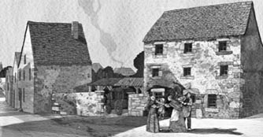
In Montreuil Fantine finds work in a factory. This is the factory of Monsieur Madeleine, an important man in the town, and very rich. Everybody likes him, because he is a good man. He is kind to his workers, he helps people, and his factory gives many jobs to the townspeople.
But who is he, this Monsieur Madeleine? Where did he come from? He arrived in Montreuil at the end of 1815, but nobody knows his family, or anything about him.
Fantine sent money every month to the Thénardiers. They were not good people, and they used the money for their own daughters. Poor little Cosette was a hungry, dirty, unloved child. She worked all day – she cleaned the house, she carried water, she washed the clothes. But Fantine knew nothing of this, and she worked long hours to make money for Cosette.
The next year the Thénardiers asked for twelve francs a month; the year after that, they wanted fifteen francs.
Then Fantine lost her job at the factory, because the women did not like her.
'She has a child, in a village somewhere near Paris.'
'Yes, and where's her husband? She doesn't have one!'
'We don't want that kind of woman here. She must go.'
Fantine found work making shirts. It was hard work for little money. She was often ill, with a small dry cough.
The Thénardiers wrote again: 'Your daughter needs a warm dress for winter. Send ten francs at once.'
Fantine did not have ten francs. She thought long and hard, and went to the barber in the town. She took off her hat, and her golden hair fell down her back.
'That's beautiful hair,' said the barber.
'What can you give me for it?'
'Ten francs.'
'Then cut it off.'
She sent the money to the Thénardiers. 'My daughter's not cold now,' she thought. 'she's wearing my hair.'
Soon another letter came from the Thénardiers: 'Send one hundred francs, or Cosette must leave our house.'
A hundred francs! How can a poor woman get that kind of money? There was only one way.
One cold winter evening, outside a restaurant in the centre of Montreuil, a woman walked up and down. There was snow on the ground, but the woman wore an evening dress, with flowers in her hair. Some young men came out of the restaurant, saw her, and began to call her bad names. They laughed and shouted, but the woman did not look at them. Then, one young man took some snow and put it down the back of the woman's dress.
The woman was Fantine. She gave a cry, turned, and hit the young man's face with her hands. People came to watch, laughing.
A tall policeman arrived, took the woman by the arm, and pulled her away. 'Come with me,' he said.
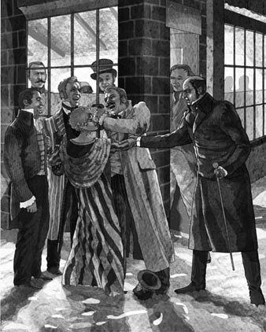
A tall policeman arrived, and pulled Fantine away.
This policeman was inspector Javert. He was new to Montreuil, and he was a hard man. To him, the law was the only important thing in life, and he hated criminals.
The law in France at that time was not kind to women like Fantine. Javert took Fantine to the office of police.
'You hit a man in the street, and that's a crime,' he told her. 'You're getting six months.'
'Six months in prison?' Fantine cried. 'No! I'm not a bad woman, Monsieur, please! I must work, I need the money for my little daughter. Please, please don't send me to prison!' She fell to the floor, crying.
'Take her away,' Javert said to a policeman.
'One moment, please,' said a new voice.
Everybody turned to look at the door, and there stood the good, the great Monsieur Madeleine. He was an important man in Montreuil.
'Inspector,' he said. 'I was outside the restaurant too, and I can tell you the true story. The young man began the fight, and this poor woman' – he looked at Fantine on the floor – 'must go free. She did nothing wrong.'
'The woman is a criminal,' said Javert angrily. 'She——'
'She must go free,' said Monsieur Madeleine. 'Ask the other people at the restaurant. We all saw the same thing.'
Fantine stood up slowly. She began to cough, a hard dry noise. Monsieur Madeleine took her arm gently.
'My dear child, you are not well,' he said.
Javert's cold eyes stared at Monsieur Madeleine.
'Do I know you from somewhere?' he said. 'Were you ever at Toulon?'
Monsieur Madeleine looked at him. His face did not change, but his eyes were Suddenly very watchful. 'No, I don't know Toulon,' he said.
Monsieur Madeleine took Fantine to the little hospital in Montreuil. She lay in bed, and coughed and coughed. Monsieur Madeleine listened to her sad story, and the next day he sent money to the Thénardiers.
'Now, you must get better,' he told Fantine. 'Cosette needs you.'
But Fantine did not get better. She was now very ill, and five days later the doctor spoke to Monsieur Madeleine.
'Does she have a child, this poor woman?' he said.
'Yes, a small daughter.'
'You must bring the child here – soon.'
Monsieur Madeleine went to sit by Fantine's bed.
'Monsieur Madeleine' – cough, cough – 'you are so' – cough, cough – 'kind to me. I want to see my daughter, one last time. Please can you' – cough, cough, cough – 'bring Cosette to me? Please, Monsieur!'
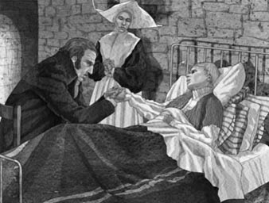
'I want to see my daughter, one last time.'
Monsieur Madeleine took her hand. 'Of course I can,' he said gently, 'and then——'
The door of the room Suddenly opened behind him, and Fantine cried out, 'No! No!'
Monsieur Madeleine looked round quickly. Inspector Javert came into the room, with four policemen.
'Jean Valjean, prisoner at Toulon, I am arresting you,' Javert said. 'After you left the prison, you stole money from a child in Toulon. You are still a thief, and now you must go to prison for life.'
Fantine sat up in bed. 'No!' she cried. 'Cosette...!'
Monsieur Madeleine stood up slowly. 'Inspector, give me three days,' he said. He was a big man, much bigger than Javert. 'Three days, to bring this poor woman's child to her before she dies. Then you can take me.'
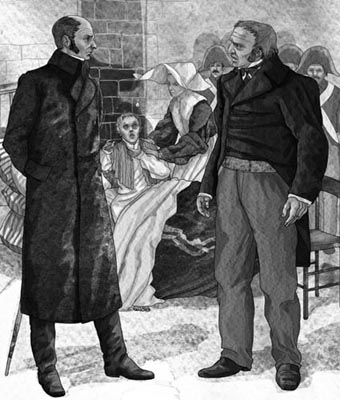
'Inspector, give me three days,' Monsieur Madeleine said.
Javert laughed loudly. 'Three days! You're going to run away!'
Behind the two men, Fantine cried out, 'Monsieur Madeleine, please take care of Cosette, oh please...'
Javert turned to her. 'Be quiet, woman! There's no Monsieur Madeleine here. This man is a criminal, called Jean Valjean, and he's going to prison!'
Fantine stared at Javert, and tried to speak, but she could not. She fell back in the bed, and lay still.
She was dead.
The people of Montreuil talked about that day for a long time – the death of the woman Fantine, the arrest of Monsieur Madeleine. Javert put Monsieur Madeleine in a locked room in the police office, but in the night he broke down the door and escaped. Where did he go? Did he go to his house in the town? His old servant said no. She saw nobody, and heard nothing, she said. (She loved Monsieur Madeleine very much.)
So where did Monsieur Madeleine go? Nobody in Montreuil saw him again. One thing was certain. In Monsieur Madeleine's house there were two beautiful old silver candlesticks. The next day, they were gone.
Madame n. French for Mrs <法语>夫人；女士
franc n. the former standard unit of money in France 法郎（法国的原货币单位）
tear n. water that comes from your eyes when you cry 眼泪
important adj. having a big effect or influence 重要的；有名望的
townspeople n. (pl.) all the people who live in a particular town 镇民
ask for to make a request for something 要；要求
cough n. the action of sending air out of the throat with a sudden loud noise 咳嗽
barber n. a man whose job is to cut men's hair 男理发师
fall v. to hang down loosely 下垂，垂落
call sb. bad names to use unpleasant words to describe someone in order to insult or upset them 谩骂某人
hit v. to touch someone quickly and hard with your hand, a stick etc 打
law n. the whole system of rules in a country 法律（体系）
criminal n. someone who is involved in illegal activities 罪犯
crime n. an illegal action 罪行
voice n. the sounds that you make when you speak 说话声，嗓音
cough v. to send air out of the throat with a sudden loud noise 咳嗽
noise n. a loud, unpleasant sound 响声；噪音
gently adv. not in a strong or violent way 轻柔地，温柔地
watchful adj. very careful to notice what is happening 警惕的
cry out to make a loud sound of fear, pain etc （因害怕、疼痛等）叫喊
arrest v. to take a person to a police station because the police think they have done something illegal 逮捕
for life for the rest of one's lifetime 终生
take care of to look after someone or something 照顾；照管
lie v. to be in a position in which your body is flat on a bed etc 躺
break down to hit a door so hard that it breaks and falls to the ground 砸破（门）
servant n. a person who works in another person's house 仆人
certain adj. without any doubt 肯定的
gone adj. no longer there 不复存在的
芳汀
2
芳汀
引言
现在让我们来说说芳汀。她年轻漂亮，在巴黎爱上了一个男人。但是她没有家人，也没有钱。对芳汀来说，这是她一生挚爱；对那个巴黎男人来说，这只是一段夏日恋曲。
男人总是狠心地对待女人。他们玩乐够了，就甩手走了。那个巴黎男人回到了他富有的家庭，留下可怜的芳汀一个人带着个孩子，一个叫珂赛特的小女孩。芳汀必须找到工作，可怎么找呢？
芳汀有个孩子，却没有丈夫，而没有丈夫的女人什么都不是——比什么都不是还糟。对带着孩子却没有丈夫的女人，人们向来不肯发发善心。他们扭过脸去，关上家门，说：“这里没有工作给像你这样的女人。”
芳汀非常疼爱自己的女儿，可是她能做什么呢？于是，1818年，在巴黎附近的一个小村子里，她把年幼的女儿交给了德纳第夫妇照顾。他们要芳汀一个月付七法郎。芳汀给了钱，最后一次把女儿抱在怀里，然后离开了。她踏上回家乡蒙特勒伊的路，眼泪顺着面颊流了下来。她满心痛苦。可怜的芳汀，可怜的珂赛特。
芳汀在蒙特勒伊的一家工厂找到了工作。这是马德兰先生开的工厂。他是镇上的大人物，非常有钱。所有人都喜欢他，因为他是一个好人。他善待厂里的工人，扶危济困，他的工厂还为镇民提供了许多工作机会。
但是，这个马德兰先生到底是谁呢？他打哪儿来？他是1815年的年底来到蒙特勒伊的，可没有人知道他的家庭情况，或是任何关于他的事。
芳汀每个月都给德纳第夫妇寄钱。他们不是好人，把钱都花在了自己的女儿身上。可怜的小珂赛特又饿又脏，没人疼爱。她从早到晚地干活儿——打扫屋子，提水，洗衣。可芳汀对此一无所知，她每天起早贪黑地工作，只为了赚钱给珂赛特。
到了第二年，德纳第夫妇每个月索要十二法郎；又过了一年，他们张口要十五法郎。
后来芳汀丢掉了工厂里的工作，因为女工们都不喜欢她。
“她有个孩子，养在巴黎附近的一个村子。”
“是呀。她的丈夫在哪里？她没有丈夫！”
“我们这里不要这样的女人。她必须走人。”
芳汀找了份缝制衬衫的工作。这份工作非常辛苦，收入却少得可怜。她常常生病，还伴有轻微的干咳。
德纳第夫妇又写信来了：“你的女儿需要一件暖和的衣裙过冬。马上寄十法郎来。”
芳汀没有十法郎。她苦恼了很久，最后上了镇上的理发店。她摘下帽子，满头的金发垂落下来。
“这头发真漂亮。”理发师说。
“卖给你的话能给我多少钱？”
“十法郎。”
“那就把它剪了吧。”
她把钱寄给了德纳第夫妇。“我的女儿现在不会挨冻了。”她心想，“她穿着我用头发换来的衣服。”
没过多久，德纳第夫妇又写来一封信：“寄一百法郎来，不然珂赛特就别想住在我们家了。”
一百法郎！一个穷困的女人怎么才能弄到这么一笔钱呢？只有一个办法了。
一个寒冷的冬夜，有个女人在蒙特勒伊镇中心的一家餐馆外面走来走去。地上还有积雪，可那个女人却只穿了一件晚礼服，发间插着花。几名年轻男子从餐馆里走了出来，他们看见了她，开始对她骂骂咧咧。他们又是笑又是嚷，可女人并没有朝他们看。这时，一个年轻男子抓了一把雪，塞进了女人后背的衣服里。
这个女人正是芳汀。她“啊”的一声叫了出来，转过身子，挥手打了那个年轻男子的脸。人们上前围观，哄笑声一片。
一个高个子警察赶了过来，抓住女人的胳膊，把她拉开了。“跟我走。”他说道。
这个警察是沙威督察。他是个冷酷无情的人，刚刚才调到蒙特勒伊。对他来说，法律是生活中唯一重要的事情，他痛恨罪犯。
在那个时代，法国的法律对芳汀这样的女人是毫不容情的。沙威把芳汀带到了警局。
“你在大街上打了一个男人，这是犯罪行为。”他对她说，“你要坐六个月的牢。”
“坐六个月牢？”芳汀哭喊道，“不行啊！我不是个坏女人，先生，求求您！我必须工作，我需要赚钱来养活我的小女儿。求求您，求求您不要送我进监狱！”她瘫倒在地上哭了起来。
“把她带走。”沙威对一名警察说。
“请等一下。”这时响起了另一个声音。
大家都转过头去看着门口，门口站着的是善良、威严的马德兰先生。他是蒙特勒伊镇上的大人物。
“督察，”他说道，“我当时也在餐馆外面，可以告诉您事情的真实情况。是那个年轻人先挑事儿的，而这个可怜的女人”——他看着地上的芳汀——“您必须放了她。她没有做错任何事。”
“这女人是个罪犯。”沙威愤怒地说道，“她——”
“您必须放了她。”马德兰先生说，“问问餐馆的其他人。我们都看到了那一幕。”
芳汀慢慢站了起来。她开始咳嗽，是很厉害的干咳。马德兰先生轻轻扶住了她的胳膊。
“我亲爱的孩子，你生病了。”他说。
沙威一双冷酷的眼睛紧盯着马德兰先生。
“我以前在哪儿见过您吗？”他说，“您到过土伦吗？”
马德兰先生看着他。他脸上的神情没有任何变化，眼神却突然变得警惕起来。“不，我不知道土伦这个地方。”他说。
马德兰先生把芳汀带到了蒙特勒伊的小医院。她躺在床上，咳个不停。马德兰先生听她讲了自己辛酸的故事，第二天，他就给德纳第夫妇寄去了钱。
“好了，你一定要好起来。”他对芳汀说，“珂赛特需要你。”
可是芳汀没能好起来。她这时已病得很重。五天之后，大夫找了马德兰先生谈话。
“这个可怜的女人是不是有个孩子？”他问道。
“是的，有一个年幼的女儿。”
“您必须把这个孩子带到这儿来——要快。”
马德兰先生走到芳汀的病床边坐了下来。
“马德兰先生”——咳，咳——“您真是”——咳，咳——“对我太好了。我想见见我的女儿，最后一面。求求您，您能”——咳，咳，咳——“把珂赛特带来见我吗？求求您了，先生！”
马德兰先生握住她的手。“我当然会把她带来，”他温和地说，“到那时候——”
房间的门在他身后猛地打开了，芳汀喊道：“不！不！”
马德兰先生迅速转身看去。沙威督察带着四个警察走进了房间。
“冉阿让，土伦的囚犯，我来逮捕你。”沙威说，“离开监狱之后，你在土伦偷了一个孩子的钱。你仍然是一个贼，现在你要坐上一辈子的牢。”
芳汀从床上坐了起来。“不！”她喊道，“珂赛特……！”
马德兰先生慢慢站起了身。“督察，给我三天时间。”他说。他身材高大，比沙威要高大许多。“就三天，我要在这个可怜的女人死前，带她的孩子来见她。之后您可以把我抓走。”
沙威大声笑了起来：“三天！你是想要逃跑！”
在这两个男人身后，芳汀哭着说：“马德兰先生，求您照顾珂赛特，哦，求求您……”
沙威把脸转向她：“闭嘴，女人！这里没有什么马德兰先生。这个男人是个罪犯，他叫冉阿让，他就要进监狱了！”
芳汀看着沙威，她想要开口，却说不出话来。她倒在床上，一动也不动。
她死了。
很长一段时间里，蒙特勒伊的人们都在谈论那天发生的事——那个名叫芳汀的女人的死和马德兰先生的被捕。沙威把马德兰先生锁在警局的一个房间里，可是那天夜里，马德兰先生撞开了门，逃跑了。他去哪儿了呢？他是不是跑回了镇上自己的家里？他的老仆人说没见到他。她说，她谁都没看见，什么都没听见。（她非常敬爱马德兰先生。）
那么，马德兰先生去了哪里呢？蒙特勒伊的居民再也没有见过他。有一件事是清楚无疑的。在马德兰先生的家里有两个漂亮的旧银烛台。第二天，它们不见了。
3．Cosette
3
Cosette
FOREWORD
Monsieur Madeleine is, of course, Jean Valjean. You knew that already. After Digne, he sells the bishop's silver plates (but keeps the candlesticks). He comes to Montreuil, builds his factory, works hard, is kind to other people... He makes a new, good life, and is true to the Bishop of Digne.
But after Valjean left prison in Toulon, and before he came to Digne, he was hungry. And in a street in Toulon he stole some money from a boy. Just one franc... to buy bread. Because he did this, the law in France says that prisoner Valjean must go back to prison, and stay there for life. He can never be a free man again.
And so we meet Javert. Before Montreuil, he was a prison guard at Toulon. The law is his god, and he hates all criminals. He remembers Jean Valjean, that big strong man, very well. He wants to see him in prison again. And he, Inspector Javert, is going to put him there.
Jean Valjean remembers Javert now. He remembers the cold eyes, the hard voice, the cruel prison guard's smile. He remembers... And is afraid. He knows that Javert is his enemy for life.
But he remembers Fantine too. He remembers her dying words – Please take care of Cosette, please... How can he leave this little girl, without a mother, without a friend in the world? He must find her – Javert, or no Javert.
Monsieur and Madame Thénardier lived in a village called Montfermeil near Paris. There was no water in the village, and the nearest water was a small river in a wood fifteen minutes' walk away. People carried the water in buckets to their houses.
Cosette hated that wood. At night, the trees made noises. She was frightened of the noises, frightened of the dark, and with a heavy bucket of water, it was a long walk home.
One dark winter night in 1823, Madame Thénardier sent Cosette out to the river for water. Cosette ran to the river and then, with her heavy bucket of water, she began to walk home. The trees were noisy tonight, whispering and laughing at her, and the little girl began to cry.
'Oh please God, help me! Please, dear God!'
And suddenly, the bucket was gone. A great hand came down and took it from her. She looked up and saw a big man in an old yellow coat.
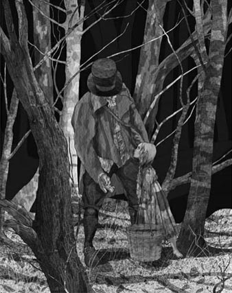
A great hand came down and took the bucket from her.
Sometimes we know, without words, when something good is happening. The little girl knew that now, and she was not frightened of the big man, not a bit.
The man spoke to her. 'Child, this is a very heavy bucket. Shall I carry it for you?'
'Yes, Monsieur.'
'How old are you?'
'I'm eight years old, Monsieur.'
'Where is your mother?'
'I don't know,' said the child. 'I haven't got a mother.'
'What's your name?'
'Cosette.'
The big man stopped. He put the bucket down and looked into Cosette's face.
'Why are you carrying a heavy bucket of water at this time of night? Who sent you?'
'Madame Thénardier.'
'I would like to talk to this Madame Thénardier. Shall we go and see her?'
'Yes, Monsieur.'
Cosette was not afraid of the tree noises now. This big man, with his gentle voice, was a new and wonderful thing in her life. They walked to the Thénardiers' house.
'Please, Monsieur, can I carry the bucket now?'
'But why?'
'I can't ask people for help, Madame says. She hits me when I do that,' Cosette said. 'she hits me all the time.'
He gave her the bucket.
The Thénardiers were very surprised to see Cosette's new friend, this big man in the old yellow coat.
Inside the house, the big man looked at Cosette. He saw her thin clothes, her dirty hair, her big frightened eyes. She was small for her eight years. Her hands were red from kitchen work, and she had no shoes.
'Why does this child have no shoes on her feet, on this cold winter night?' he said to Madame Thénardier.
Madame Thénardier looked at Cosette angrily. 'Go into the kitchen, Cosette. There is work to do. Go!'
'And who are you?' Monsieur Thénardier said.
'I am here for Fantine, the child's mother,' said the big man. 'You don't need to know my name. Fantine is dead, so you can get no more money from her. Here' – he put some money on the table – 'is 1500 francs. Now call the child. I'm taking her away.'
When Jean Valjean and Cosette left Montfermeil, Cosette did not look back. She never wanted to see Madame Thénardier again.
She put her cold little hand into Valjean's great hand, and looked up into his face. 'Monsieur,' she said, 'can I... can I call you Father?'
Valjean looked down at her big round eyes. 'Yes,' he said. He did not know love, he did not understand love, but in that moment, suddenly, he felt a father's love for this small child.
'Yes,' he said again. 'Yes, you can call me Father. It's a good name.'
Hand in hand, they walked away on the road to Paris.
In Paris Cosette learnt to laugh, and to sing like a bird, and to be happy. Jean Valjean learnt to be father and mother to this child, and he loved her dearly.
But they lived quietly, moved house often, and only went out at night. Because Javert, too, was in Paris. When Valjean escaped from Montreuil, Javert came to Paris to look for him. He was now an important inspector in the Paris police. Every criminal in Paris was afraid of inspector Javert.
Once, Valjean saw Javert by the river, and the next day he looked for a new place to live. He found one, behind the high walls of a girls' school. The school gave Valjean a job as a gardener, and he lived in a little house in the big gardens. Cosette lived in the school. But every day she came to the gardener's little house for one hour. They talked, and they sang, and they read books. It was the happiest hour in the day for her and for Jean Valjean.
And so the years passed.
enemy n. someone who hates you and wants to harm you 敌人
wood n. a small forest 小树林
bucket n. an open container used especially for carrying liquids 桶
frightened adj. feeling afraid 害怕的
laugh at to make unkind remarks about someone 嘲笑
wonderful adj. making you feel very happy 令人高兴的；奇妙的
gardener n. someone whose job is to work in the gardens 花匠
pass v. time goes by （时间）消逝
珂赛特
3
珂赛特
引言
马德兰先生当然就是冉阿让。这你已经知道了。离开迪涅之后，他把主教的银餐盘卖了（但是留下了烛台）。他来到蒙特勒伊，建起了自己的工厂，辛苦工作，对人友善……他过上了诚实的新生活，成为了迪涅主教期望他成为的那种人。
但在冉阿让离开土伦监狱、还没到迪涅之前，他一直饿着肚子。在土伦的一条街上，他从一个男孩那里偷了些钱。就一法郎……为了买面包吃。就因为他干了这件事，法国的法律规定囚犯冉阿让必须再进监狱，坐一辈子的牢。他再也不可能获得自由了。
于是我们遇到了沙威。来蒙特勒伊之前，他是土伦的一个监狱看守。法律是他的上帝，他痛恨一切罪犯。他对那个人高马大的壮汉冉阿让记得一清二楚。他一心想要看到他再进监狱。而他，沙威督察，一定会把他送进牢里的。
冉阿让现在也记起了沙威。他认得那双冷酷的眼睛、严厉的声音，以及这个残忍的监狱看守脸上的笑容。他记得……而且他感到害怕。他知道沙威是他这辈子的死敌。
但是他也记得芳汀。他记得她临死前的话——求您照顾珂赛特，求求您……这个小女孩没有了妈妈，在这世上也没有一个朋友，他怎么能丢下她不管呢？他必须找到她——管他沙威不沙威。
德纳第先生和夫人住在巴黎附近一个叫孟费的村子里。村子里没有水源，最近的水源是树林里的一条小河，离村子有十五分钟的路程。村民都要拎桶打水回家。
珂赛特痛恨那个树林。夜晚，树木发出声响。珂赛特害怕那种声响，害怕黑暗。她手里拎着沉沉的一桶水，令回家的路变得很漫长。
1823年一个漆黑的冬夜，德纳第夫人叫珂赛特到河边去打水。珂赛特跑到河边，打了水后，拎着沉沉的水桶往家走。今天晚上树木发出的声音很响，它们在一边低语，一边嘲笑她，这个小女孩开始哭了起来。
“噢，上帝啊，求您救救我吧！求您了，亲爱的上帝！”
突然，她手里的水桶不见了。一只大手伸了过来，把水桶接了过去。她抬起头来，看见一个穿着黄色旧外套的大个子男人。
有时候，不用说话我们也会知道好事正降临在自己身上。小女孩现在就有这种预感，她不害怕这个大个子男人，一点儿也不。
那个男人开口跟她说话：“孩子，这桶水很沉啊。我来帮你拎，好吗？”
“好的，先生。”
“你几岁了？”
“我八岁了，先生。”
“你的妈妈在哪儿呢？”
“我不知道。”这孩子说道，“我没有妈妈。”
“你叫什么名字？”
“珂赛特。”
那个大个子男人停下了脚步。他放下水桶，审视珂赛特的脸。
“天这么晚了，你为什么还要拎这么沉的一桶水？谁让你去打水的？”
“德纳第夫人。”
“我想和这个德纳第夫人谈谈。我们去找她，好吗？”
“好的，先生。”
珂赛特现在不再害怕树木发出的声响了。这个说话声音温柔的大个子男人，成了她生命中一件美好的新事物。他们走到德纳第夫妇的房子前。
“先生，现在让我来拎水桶，好吗？”
“可为什么呢？”
“夫人说，我不能叫别人帮忙。我要是叫人帮忙，她就会打我。”珂赛特说。“她常常打我。”
他把水桶给了她。
见到珂赛特的新朋友，这个穿着黄色旧外套的大个子男人，德纳第夫妇非常吃惊。
进了屋子，这个大个子男人打量起珂赛特来。他看见她衣衫单薄，头发肮脏，一双惊恐的眼睛睁得大大的。她看起来比寻常八岁的孩子瘦小，双手因为一直在厨房里干活儿而变得通红，脚上连鞋子都没有。
“冬天这么冷的晚上，这个孩子为什么没有鞋穿？”他问德纳第夫人。
德纳第夫人气冲冲地瞪着珂赛特：“到厨房去，珂赛特。还有活儿要干。快去！”
“你是谁？”德纳第先生问道。
“我是替孩子的母亲芳汀来的。”大个子男人说，“你不需要知道我的名字。芳汀死了，你们从她那里再也弄不到钱了。这个给你们”——他把一些钱放在桌子上——“这是1500法郎。现在把孩子叫来，我要把她带走。”
冉阿让和珂赛特离开孟费村的时候，珂赛特没有回头望。她再也不想见到德纳第夫人了。
她把自己冰冷的小手放进冉阿让的大手里，抬头看着他的脸。“先生，”她说，“我能……我能叫你爸爸吗？”
冉阿让低头望着她那双圆圆的大眼睛。“可以。”他说。他不知道什么是爱，也不懂爱，可是在那一刻，他突然感受到了对这个小孩父亲般的爱。
“可以，”他再次说道，“可以，你可以叫我爸爸。听起来真不错。”
他们手拉着手，上路往巴黎而去。
在巴黎，珂赛特学会了欢笑，学会了像小鸟一样歌唱，学会了快乐。冉阿让学会了当起这个孩子的父母，他非常疼爱她。
不过，他们过着不引人注意的生活，常常搬家，并且只在天黑之后外出。这都是因为沙威也在巴黎。冉阿让从蒙特勒伊逃走之后，沙威就来到巴黎追捕他。他现在是巴黎警局中一位重要的督察。巴黎的每个罪犯都害怕沙威督察。
有一次，冉阿让在河边看见了沙威，他第二天就去找新住处。他在一所女子学校的高墙内找到了住处。学校雇了冉阿让当花匠，他就住进了大花园里的一座小屋。珂赛特住在学校里。不过，她每天都会到花匠的小屋呆一个小时。他们一起聊天，一起唱歌，一起看书。对她和冉阿让来说，这是一天中最幸福的时光。
就这样，一年一年过去了。
4．Marius
4
Marius
FOREWORD
Nine years pass. Valjean and Cosette are living in the Rue Plumet in Paris, in a house with a big garden. It is a quiet street and nobody comes there. This pleases Valjean, because he is still afraid of Inspector Javert.
Cosette is now a young woman. She is tall, with golden-brown hair. She is beautiful, but there are many beautiful faces in the world. The wonderful thing about Cosette's face is her smile – a slow, warm, gentle smile, like sunlight after rain.
And now we must meet Marius, and his young friend Gavroche. Marius is a student, a young man with many ideas but no money. Paris is full of young men like this. Marius has a grandfather (his father is dead), but he does not talk to him. Their political ideas are very different. At seventeen, he leaves home with 30 francs, his watch, and a small bag of clothes. Now, five years older, he lives with other students, and they talk all night about books and ideas, politics and government, life and death. All students are like this. They live for ideas, and do a little work here and there. When they need to.
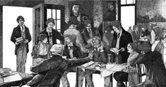
Gavroche is a child of the Paris streets. He is eleven or twelve years old, and wears a man's trousers and a woman's shirt (a kind woman gave these clothes to him). He lives on the streets, knows everybody, goes everywhere, and enjoys life. Well, why not? He knows no other life, only this one.
Marius loved walking through the streets and gardens of Paris, and he often walked in the Luxembourg garden. One day in the garden he saw a man with a young girl. The man was about sixty, and the girl, Marius thought, was about seventeen. He did not see her eyes, but he saw her golden-brown hair and her slow gentle smile.
He walked past them once, and did not look back. But he came to the Luxembourg the next day, and the day after that, and for the next five days. The man and the girl were always there. He could not stop looking at the girl. He wanted very much to see that smile again.
On the seventh day the girl turned her head and looked at Marius. She looked into his eyes across the garden, and that look went, like a bullet from a gun, into Marius's heart. There were no words, but at once Marius knew and the girl knew. This was love.
Life stopped for Marius then. He spent hours in the Luxembourg, and every time he saw her, the sun came out and all the birds in the garden began singing.
But the man began to look at Marius too, and his face was not friendly. Marius was afraid, and he went to Gavroche.
'Gavroche, please, you must help me.'
'Why? What's the matter, Monsieur Marius?'
'There's a girl, Gavroche. She walks in the Luxembourg every day. I want you to follow her home and tell me the address.'
'Why don't you follow her? I'm busy,' said Gavroche.
'I'm afraid to,' said Marius. 'Her father, grandfather, I don't know, is watching me. He doesn't like me.'
'Why is this important, Monsieur Marius?' Gavroche said. He had a big smile on his face.
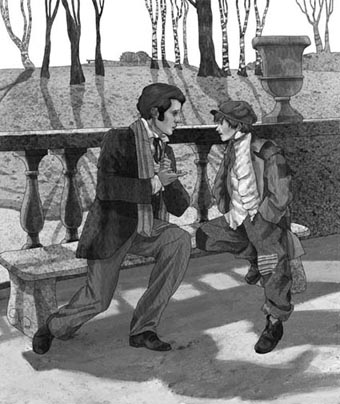
'Why is this important, Monsieur Marius?' asked Gavroche.
'Because I'm IN LOVE,' shouted Marius. 'Please, Gavroche, do it!'
Gavroche ran away, laughing. Two days later he came to Marius's rooms.
'Rue Plumet,' he said. 'House at the end of the street. Hard to find. You need to look for it.'
Spring came, and Cosette began to go out into the garden at Rue Plumet. She was usually alone. Her old servant, Toussaint, was always in the kitchen, and Father (Jean Valjean) was in his room, reading.
Cosette was sad. She remembered the young man in the Luxembourg garden, but Father no longer wanted to go there. But that evening in the Rue Plumet garden, something very wonderful happened.
She heard a voice, a man's voice. She looked round, and it was him.
'I'm so sorry,' he said. 'Please don't be afraid. I just wanted to... You remember the Luxembourg garden? I saw you there for the first time... I can't forget you, day and night I think about you... Please don't be afraid... You see, I love you... It just happened to me... I can't stop it... Don't be afraid... please.'
Cosette listened to this wonderful river of words, and then held out her hand to him. He took her hand, and she pulled it to her, and put it against her heart.
'Then – you love me?' he said.
'Of course! You know that.'
A kiss. No words. They did not need words. Later, words came. The story of his life, the story of her life, everything. Between lovers, everything is interesting.
When they were done with words, Cosette put her head on Marius's shoulder and asked:
'What is your name?'
'My name is Marius. And yours?'
'Cosette.'
Every evening they met secretly in the garden at Rue Plumet. A kiss, a gentle laugh, whispered words of love – it was the spring and summer of their young lives.
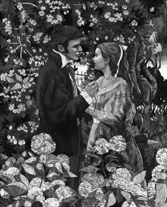
It was the spring and summer of their young lives.
But around them, outside their garden, there was change. There were angry people; there were police and soldiers on the streets of Paris. And one day Jean Valjean said to Cosette, 'My dearest child, we live in dangerous times. We must leave France and go to England.'
Cosette looked at him with frightened eyes. 'Must we go, Father?' she said.
Valjean watched her face. 'We must,' he said. 'Get ready to leave very soon.'
There was a change in Cosette. Valjean remembered the young man in the Luxembourg garden, and he looked at Cosette's beautiful young face. He was afraid – afraid of losing his dear daughter.
That evening in the Rue Plumet garden, there were many unhappy tears.
'But you must follow us to England,' cried Cosette.
'How can I do that?' cried Marius. 'I have no money, no passport even! England to me is like the moon!'
They held hands in the moonlight.
'Listen. I have an idea,' Marius said slowly. 'Wait two days. Perhaps...'
'Two days?' cried Cosette. 'How can I live two days without you?'
please v. to make someone happy or satisfied 使高兴；使满意
idea n. someone's opinion or belief 想法，信念
political adj. relating to the government and politics of a country 政治的
government n. the group of people who govern a country 政府
across prep. from one side of something to the other 在……的另一边
bullet n. a small piece of metal fired from a gun 子弹
address n. the details of the place where someone lives 住址
kiss n. an act of touching someone lovingly with your mouth 亲吻
unhappy adj. not happy 不快乐的
passport n. a small official document needed to leave your country and enter other countries 护照
马吕斯
4
马吕斯
引言
九年过去了。冉阿让和珂赛特如今住在巴黎卜吕梅街一所带大花园的房子里。这是条僻静的街道，没有人到这儿来。这一点让冉阿让很满意，因为他仍然怕被沙威督察发现。
珂赛特现在已经是个大姑娘了。她个子高挑，一头金褐色的头发。她容貌美丽，不过这个世界上的漂亮脸蛋儿多得是，而珂赛特的脸庞吸引人的地方在于她的笑容——慢慢绽放、带着暖意的温柔笑容，就像雨后的阳光。
现在我们必须来介绍一下马吕斯和他年轻的朋友伽弗洛什。马吕斯是个学生，他是个很有想法的年轻人，可是却没有钱。巴黎到处都是这样的年轻人。马吕斯的祖父还在（他的父亲已经过世了），但他们不说话——他们的政治观点天差地别。17岁那年，他带着30法郎、自己的表和一小包衣服离开了家。现在，五年过去了，他和其他学生住在一起，他们彻夜畅谈书籍和信念、政治和政府、生和死。所有的学生都是这样。他们为信念而生，只在需要的时候，东家西家地打点零工。
伽弗洛什是个在巴黎街头流浪的孩子。他十一二岁，穿着一条男式长裤和一件女式衬衣（这些衣服是一位好心的妇人送给他的）。街头就是他的家，每一个人他都认识，每个地方他都去过，每天他都过得快快活活。是啊，为什么不呢？他没有过过其他的生活，他所知道的生活就是这样。
马吕斯喜欢穿行于巴黎的街道和公园，他常常在卢森堡公园散步。有一天，在卢森堡公园里，他见到一个男人和一个年轻女孩。那个男人60岁上下，而那个女孩，马吕斯心想，大概17岁吧。他没有看到她的眼睛，但他看到了她金褐色的头发和慢慢绽放的温柔笑容。
有一次，他从他们身边走过，不过他没有回头。可是第二天，他又来到了卢森堡公园，再下一天也来了，接下来的五天都来了。那个男人和女孩总是在公园里。他无法把目光从女孩的身上挪开。他非常想再见到那个笑容。
到了第七天，女孩转过头看着马吕斯。她的目光从公园的另一端投来，就像从枪口射出的一颗子弹，射进了马吕斯的心房。他们彼此无言，但马吕斯和女孩同时意识到，这就是爱。
马吕斯的生活自此定格。他长时间地呆在卢森堡公园内，每一次见到她，太阳便破云而出，公园里的鸟儿也开始歌唱。
但是那个男人也开始注意到马吕斯，他脸上的表情并不友好。马吕斯有些怕他，于是他去找伽弗洛什。
“伽弗洛什，求求你，你一定要帮帮我。”
“为了什么呀？怎么回事，马吕斯先生？”
“我遇到了个女孩，伽弗洛什。她每天都在卢森堡公园散步。我想让你跟着她回家，再把她的地址告诉我。”
“你为什么不去跟呢？我忙着呢。”伽弗洛什说。
“我害怕。”马吕斯说，“她的父亲——还是祖父，我也说不准——在盯着我。他不喜欢我。”
“这有什么大不了的，马吕斯先生？”伽弗洛什说。他的脸上绽开了灿烂的笑容。
“因为我恋爱了。”马吕斯大声说道，“拜托，伽弗洛什，你就帮我这个忙吧！”
伽弗洛什笑着跑开了。两天后，他来到马吕斯的住处。
“在卜吕梅街。”他说，“街道尽头的房子。很难找。你得仔细找才行。”
春天来了，珂赛特开始到卜吕梅街的花园里去。她通常都是一个人去。她的老仆人杜桑总是在厨房里忙活，爸爸（冉阿让）则在自己的房间里看书。
珂赛特闷闷不乐。她回想起卢森堡公园里的那个小伙子，可是爸爸不愿再到那里去了。但是，就在那天傍晚，在卜吕梅街的花园里，一件非常美妙的事情发生了。
她听到了一个声音，一个男人的声音。她四下张望，原来是他。
“真是非常抱歉。”他说，“请不要害怕。我只是想……你还记得卢森堡公园吗？我是在那里第一次见到你的……我忘不了你，日日夜夜都在想着你……千万别害怕……我想说，我爱你……爱情就这么发生在我身上了……我控制不住……别害怕……求求你。”
珂赛特耳听着他倾诉不绝的动人话语，然后向他伸出了自己的手。他抓住她的手，她又把他的手拉向自己，放在胸口上。
“那么说——你爱我？”他说。
“当然！你知道的。”
一个亲吻。没有话语。他们不需要话语。亲吻过后，他们才聊起来。他从小到大的生活，她从小到大的生活，无话不谈。对热恋中的情人来说，什么话题都有趣。
等到他们终于把要说的话都说完了，珂赛特把头靠在马吕斯的肩头，问道：
“你叫什么名字？”
“我叫马吕斯。你呢？”
“珂赛特。”
每天傍晚，他们都在卜吕梅街的花园里秘密会面。一个亲吻，一声轻笑，呢喃的情话——这是两个年轻人生命中的春天和夏天。
可是，在他们周围，在他们的花园围墙之外，世界正在发生变化。民怨汹汹；军警进驻巴黎街头。一天，冉阿让对珂赛特说：“我最亲爱的孩子，我们生活在充满危险的时代。我们必须离开法国，到英格兰去。”
珂赛特看着他，眼睛里满是惊恐。“我们一定要走吗，爸爸？”她问。
冉阿让望着她的脸。“一定要走。”他说，“先收拾好东西，我们很快就出发。”
珂赛特变了。冉阿让记起了卢森堡公园里的那个小伙子，他看着珂赛特年轻美丽的面孔。他害怕——害怕失去自己亲爱的女儿。
那天傍晚，在卜吕梅街的花园里，洒下了许多悲伤的眼泪。
“可你一定要跟我们到英格兰去。”珂赛特哭着说。
“我怎么去得了呢？”马吕斯呜咽道，“我没有钱，连护照都没有！对我来说，去英格兰就像登天一样难！”
他们在月光下手拉着手。
“听着，我有个主意。”马吕斯慢慢说道，“等两天。也许……”
“两天？”珂赛特哭了出来，“没有了你，我怎么挨过两天呢？”
5．Love and Rrebellion
5
Love and Rrebellion
FOREWORD
So, what is Marius's idea? It is this... He wants to marry Cosette, but he has no money. His grandfather has money. He must ask his grandfather... But his grandfather is an old man, and old men's ideas do not change easily. He shouts at Marius, Marius shouts back, and that is the end of that. The next evening he goes as usual to the Rue Plumet. There is nobody in the garden, the house is dark, the windows are closed – Cosette and her father are gone.
Marius cannot live without Cosette. He wants to die, but Gavroche tells him that his friends need him. It is June 1832, and students and workers are running through the streets of Paris, bringing rebellion to the city, and everyone must fight the government. Marius is soon at the barricades, with a gun in his hand. He is happy. Death can come at any moment with a bullet from a soldier's gun.
These are dangerous times. Jean Valjean sees Inspector Javert in a street near the Rue Plumet. What is he doing there? Are the police watching his house? Valjean does not wait. The same night he and Cosette leave Rue Plumet. They move to 7 Rue de l'Homme-Armé, and begin to get ready for England.
How can love find a way in these troubled times?
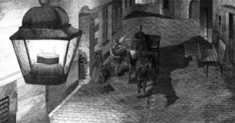
When the soldiers attacked in front of the arsenal building, the people turned and ran, this way and that way, through the streets of the city. Marius and his friends came to the rue de la Chanvrerie and they built their barricade there. It was two metres high, made of wood and stone. Behind their barricade, the rebels waited for the soldiers. Night came, but nothing happened.
Enjolras was the leader of the students. He called Gavroche to him.
'You're small,' he said. 'Nobody sees you. Go and have a look round the city, and then bring us any news.'
Just after midnight, Gavroche was back. 'The soldiers aren't moving,' he said. 'But there are a lot of them.' He stopped Suddenly and whispered, 'Hey, who's that? That tall man, over there?'
Enjolras and Marius turned to look.
'I don't know him,' said Marius.
'People are coming and going all night,' said Enjolras. 'Why, Gavroche? Do you know him?'
'Yes,' whispered Gavroche. 'He's not one of us. He's a spy, a police spy. Name of Javert. He stopped me once, down by the river. Put me in prison all night.'
'Are you certain about this, Gavroche?' said Marius.
'I'm certain, all right,' said Gavroche. 'He's a spy!'
The rebels did not like spies. Four of Enjolras's men jumped on Javert, pulled him into the tavern behind the barricade, and tied him to the wall.
'Do we shoot him now?' asked one of the men.
'Later,' said Enjolras. 'He can wait.'
They went back outside to the barricade and listened for the sound of soldiers. Gavroche found Marius at the far end of the barricade.
'Marius,' he whispered, 'on my way back here I came past your rooms and went in.'
'Why?' whispered Marius.
'I was hungry,' said Gavroche. 'The woman in your house is nice – she always gives me something to eat. But she had a letter for you. She gave it to me. It came two days ago, she said.'
'A letter? a letter from whom?' Suddenly there was hope in Marius's heart. 'Quick – give it to me.'
The letter was from Cosette.
My dearest, Father says we must leave at once. We go tonight to 7 Rue de l'Homme-Armé, and soon to England. Oh my dear, how can I live without you? Cosette
Marius read this letter four times and then kissed it. She still loved him! He must write back to her and say his last goodbye. There was still no sound of soldiers in the street. He found some paper and a pencil.
Cosette, dearest. I came to the Rue Plumet, but you were gone already. We cannot marry. I went to my grandfather, and he said no. I have no money, and you have no money. I love you. I can never forget you. The fighting begins here very soon. When I am dead, don't be sad. Our love was beautiful. Marius
He called to Gavroche. 'I want you to take this letter to the rue de l'Homme-armé. Can you do that for me?'
'Yes, but not now!' said Gavroche. 'I'm staying here for the fighting. I can shoot too, you know!'
'Gavroche, you're just a boy! We don't want you to die in the fighting. Stay away from the shooting! And this letter is very important to me. It must go now. I want you to put it into Cosette's hands. Please, Gavroche.'
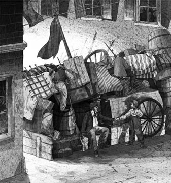
'I want you to put this letter into Cosette's hands.'
'Oh, very well,' said Gavroche. He took the letter, put it inside his shirt, and ran off into the dark.
When Valjean and Cosette left the house in Rue Plumet, Cosette was very sad. Valjean saw this, but he said nothing. In the rue de l'Homme-armé, Cosette stayed in her bedroom. Toussaint took her meals up to her.
In the night Valjean could not sleep. The city was quiet, but for how long? He went outside the house and stood in the street, listening. There were voices in the next street, and then he heard singing. A boy, singing.
Gavroche came up the street, looking at the house numbers. He saw Valjean and stopped.
'Well, young man, what's the news?' said Valjean.
'The news is that I'm hungry,' said Gavroche.
Valjean put his hand in his pocket and found a five-franc piece. Gavroche stared at it. He didn't see many five-franc pieces, and he was very pleased to see this one. He put it in his pocket.
'You're all right,' he said. 'Do you live in this street? Do you know number seven?'
'What do you want with number seven?' said Valjean.
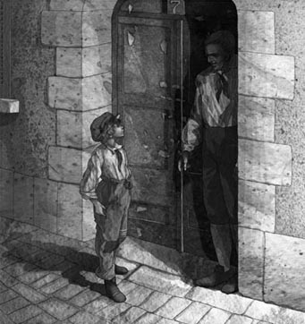
'What do you want with number seven?' said Valjean.
'Letter for someone,' said Gavroche. 'A woman.'
Valjean stared at him. He felt cold. A woman. Cosette? He remembered at once the young man in the Luxembourg. He tried to smile. 'Ah, that's the letter for Cosette,' he said. 'I'm waiting for it.'
'Yes, that's her. Well, here you are,' said Gavroche. 'It comes from the barricade in the rue de la Chanvrerie. I'm going back there now. Goodnight, Monsieur.'
Jean Valjean went back into the house with Marius's letter. He read it quickly... I love you. I can never forget you... So, Cosette, his dear, dear daughter, was in love. She was his world; without her, his life was nothing. He could not even think about it... When I am dead, don't be sad... Those words gave him hope. So the young man was one of the rebels at the barricade.
'When the soldiers start shooting,' he thought, 'that's the end of all the rebels. I do nothing, I say nothing, I keep this letter, and poof! Nothing changes in our lives.'
But Valjean did not feel easy. He remembered all their happy years as father and daughter, and he saw again Cosette's sad eyes when they left the Rue Plumet. How could he take her away to England?
He turned and went out of the room. A little later, he left the house, wearing dark clothes and carrying a gun, and walked away down the street.
marry v. to become one's husband or wife 和……结婚
as usual in the way that happens or exists most of the time 像平常一样
at any moment something is likely to happen very soon 随时，马上
attack v. to use violence to hurt a person or damage a place 攻击
arsenal n. a building where weapons are stored 军火库
made of produced from 由……制成
spy n. someone whose job is to find out secret information 间谍；密探
jump on to attack someone Suddenly 突然袭击
tavern n. a pub where you can also stay the night （可住宿的）酒馆
tie v. to fasten things together using a piece of string etc 系，绑
shoot v. to kill or injure someone using a gun 射击；开枪
goodbye inter. used when you are leaving someone, or when they are leaving 再见
pocket n. a small bag in or on a coat, trousers etc 口袋
piece n. a coin of the value mentioned （特定面值的）硬币
easy adj. not feeling worried or anxious 安心的
爱情和起义
5
爱情和起义
引言
那么，马吕斯的主意是什么呢？是这样的：他想和珂赛特结婚，可是他没有钱。他的祖父有钱，他得求他祖父……可是他祖父上了年纪，老人的想法不是那么容易改变的。他冲着马吕斯叫嚷，马吕斯还以颜色，事情就这样不了了之了。第二天傍晚，他像往常一样去了卜吕梅街。花园里没有人，屋子里黑着灯，窗户都关起来了——珂赛特和她的父亲已经走了。
马吕斯没有珂赛特就活不下去。他想到了死，可是伽弗洛什告诉他，他的朋友们需要他。这时是1832年6月，学生和工人在巴黎街头奔走，在城市里发动起义，每个人都必须和政府作斗争。马吕斯很快就来到了街垒，手里拿着一把枪。他感到高兴。士兵枪支射出的子弹，随时会把他带到死神面前。
这是充满危险的时代。冉阿让在卜吕梅街附近的一条街道上看见了沙威督察。他来这里干什么？警察在监视他的房子吗？冉阿让不能再等了。他和珂赛特当天晚上就离开了卜吕梅街。他们搬到了武人街7号，开始收拾东西准备动身前往英格兰。
在这动荡不安的时代，爱情如何能找到出路？
当士兵在军火库前发起进攻时，人们掉头四散奔逃，穿过城市的大街小巷。马吕斯和他的朋友们来到了麻厂街，在这里筑起了街垒。街垒有两米高，是用木头和石块筑成的。义军藏身在街垒后面，等待士兵的进攻。夜幕降临，可是一丁点儿动静也没有。
安灼拉是学生的领袖。他把伽弗洛什叫到跟前。
“你的个子小。”他说，“没人会注意到你。你到城里转一圈，各处看看，然后给我们报个信。”
午夜刚过，伽弗洛什就回来了。“士兵们没有新的动向。”他说，“不过他们人数很多。”他突然停住话头低声道：“嘿，那个人是谁？那边那个高个子男人？”
安灼拉和马吕斯转头望去。
“我不认识他。”马吕斯说。
“整晚上都有人进进出出的。”安灼拉说，“怎么啦，伽弗洛什？你认识他？”
“是，”伽弗洛什压低声音说，“他不是我们的人。他是个密探，警局的密探。他叫沙威。有一次，他在河边把我拦了下来，把我关进牢里关了一整夜。”
“你确定吗，伽弗洛什？”马吕斯问道。
“我非常确定。”伽弗洛什答道，“他是个密探！”
义军不喜欢密探。安灼拉手下有四个人冲着沙威一拥而上，把他拖到了街垒后的酒馆里，绑在了墙上。
“我们现在就枪毙他吗？”其中一个人问道。
“等等再说。”安灼拉说，“先不着急杀他。”
他们走出酒馆，回到了街垒，留神听着士兵们的动静。伽弗洛什在街垒远远的一头找到了马吕斯。
“马吕斯，”他低声说，“我回来的路上经过你的住处，就走了进去。”
“你进去干什么？”马吕斯小声问道。
“我饿了。”伽弗洛什说，“你的房东太太人很好，她总是给我吃的。她有封信让我带给你。她把信给了我。她说，信是两天前收到的。”
“有封信？是谁写来的信？”马吕斯的心里突然闪现出一丝希望。“快——把信给我。”
信是珂赛特写来的。
我最亲爱的，爸爸说我们必须马上离开。我们今晚搬到武人街7号，然后很快就会前往英格兰。哦，亲爱的，没有你我可怎么活啊？——珂赛特
马吕斯把信读了四遍，然后又吻了一下。她还爱着他！他得马上给她回信，向她作最后的道别。街上仍然没有士兵的动静。他找了几张纸和一支铅笔。
我最亲爱的珂赛特，我赶到卜吕梅街时，你已经走了。我们结不成婚了。我去找过我的祖父，他不肯答应。我身无分文，你也是一样。我爱你。我永远也忘不了你。这里的战斗很快就要打响了。我死了以后，你不要难过。我们的爱是美好的。——马吕斯
他把伽弗洛什叫了过来。“我想请你把这封信送到武人街。你能帮我这个忙吗？”
“没问题，可是现在不行！”伽弗洛什说，“我要留在这儿战斗。你要知道，我也会开枪的！”
“伽弗洛什，你还是个孩子！我们可不希望你在战斗中牺牲。一旦开火你一定要躲开！这封信对我非常重要，一定要现在就送。请你务必把这封信交到珂赛特的手里。拜托你了，伽弗洛什。”
“哦，那好吧。”伽弗洛什说。他接过信，塞进衬衫里头，跑进了夜色之中。
冉阿让和珂赛特离开卜吕梅街的住处时，珂赛特非常难过。冉阿让看在眼里，但他什么都没有说。在武人街的住处，珂赛特呆在自己的卧室里。杜桑把一日三餐给她送上楼去。
到了晚上，冉阿让无法合眼。整座城市静悄悄的，可是这安静能持续多久呢？他走出屋子，站在街上倾听。邻街传来几个人说话的声音，接着他听到了歌声。一个男孩在唱歌。
伽弗洛什从街头走来，挨个去看门牌号码。他看到冉阿让后停下了脚步。
“嗨，小伙子，有什么消息吗？”冉阿让问。
“消息就是我肚子饿了。”伽弗洛什说。
冉阿让把手伸进口袋，掏出了一枚五法郎硬币。伽弗洛什两眼直勾勾地看着硬币。他还没见过几回五法郎的硬币呢，看到这枚硬币真有点心花怒放。他把硬币放进了自己的口袋。
“你人不错。”他说，“你住在这条街上吗？你知道7号是哪一家吗？”
“你找7号那家干什么？”冉阿让问。
“送封信给人。”伽弗洛什说，“一个女人。”
冉阿让盯着他，心里凉了半截。一个女人。珂赛特？他一下子记起了卢森堡公园里的那个小伙子。他想要挤出点笑容。“啊，这是给珂赛特的信。”他说，“我正等着这封信呢。”
“对，就是给她的。喏，给你。”伽弗洛什说，“信是从麻厂街的街垒送来的。我现在要回那儿去了。晚安，先生。”
冉阿让拿着马吕斯的信回到了屋子里。他快速地把信读了一遍……我爱你。我永远也忘不了你……这么说，他最最亲爱的女儿珂赛特恋爱了。她就是他的整个世界；没有了她，他的生活便失去了意义。他连想都不敢去想……我死了以后，你不要难过……信上的这几句话又给了他希望。这么说来，这个小伙子是在街垒战斗的义军一员。
“士兵开火之后，”他想，“这些起义的人都会死掉。我什么都不做，什么都不说，只要把这封信藏起来，噗！我们的生活还将和原来一样。”
可冉阿让并没安下心来。他想起了这些年他们父女俩相依为命的快乐时光，之后他眼前又浮现出他们离开卜吕梅街时珂赛特悲伤的眼神。他怎么能把她带到英格兰去呢？
他转身走出房间，不一会儿便出门了。他穿着深色衣服，带了一支枪，沿着街道走去。
6．The Barricades
6
The Barricades
FOREWORD
It is a long night at the barricade in the Rue de la Chanvrerie. The news is bad. More and more soldiers are arriving in the city, but the people stay in their homes. This time they don't want to fight the government. Only the students are still at the barricades, waiting for the soldiers' bullets – and death.
Then a new man arrives at the barricade, a big man in dark clothes. Marius stares. It is Cosette's father, he is certain. Is he a friend or an enemy? Who knows?
Inside the tavern, Javert too waits for death. Rebels shoot spies, he knows that. Does he think about his life, waiting there in the tavern? Is the law always right? Can a criminal change and be a good man? Does Javert ask these questions? Who knows?
Daylight comes, and the shooting begins. Ratatat-ratatat-ratatat on the barricade, noise and shouting, cries and screams. Valjean saves Enjolras's life. Two men die. Valjean carries the bodies into the tavern, sees Javert. And Javert sees him. Then the shooting stops.
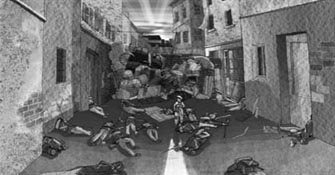
The rebels need more bullets, and Gavroche runs out to the front of the barricade. Come back, Gavroche! He doesn't listen, and starts singing. There are dead soldiers lying in the street. Gavroche takes the bullets from their bags and puts them into his bag. He is small and quick, and his bag is nearly full before the soldiers start shooting at him. Come back, Gavroche! He sings louder, but the fifth bullet hits him, and he falls down in the street. He moves once, then falls back. Gavroche is dead. A child of the Paris streets, his singing now stopped for ever, just another dead body in the rebellion.
Smoke from the guns is everywhere, it is hard to see anything. But Marius runs out into the street, picks Gavroche up, and runs back. He puts the small body on a table in the tavern, and cries.
It is going to be a long day.
Behind the barricade Enjolras talked to the men. 'They're going to attack again soon – sixty soldiers to every one of us. Marius and I are your two leaders. Gavroche brought us bullets, so let's use them well, and fight to the end.'
'Let's kill the spy now,' said one of the men.
Then Valjean spoke. 'Give him to me. I can do that for you. I'd like to shoot him.'
Enjolras looked at him. 'You saved my life, friend. You can have the spy.'
Valjean took Javert out of the tavern to a little street behind. He took out a knife.
'Oh, a knife!' said Javert. 'Of course, a criminal's way to kill. So, kill me, and be quick.'
Valjean said nothing. He cut the ropes around Javert's arms and legs, then stood up, and said:
'You're free to go.'
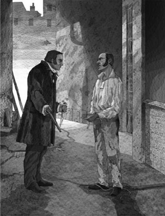
'You're free to go,' said Valjean.
Javert stared. He could not understand this.
'I live in the rue de l'Homme-armé,' Valjean said. 'The next time we meet, you can arrest me. Now, go!'
Javert turned and walked away. Valjean fired his gun into the air, then went back to the barricade. 'It's done,' he told Enjolras.
Now the second attack began. The government had more men, more guns, more bullets – and one by one, the students began to die. Marius was on top of the barricade. He was one of the last men still alive, but then one, two bullets hit him, and he fell. Two great hands at once picked him up. 'Cosette,' whispered Marius, and then he went into that dark night.
Jean Valjean knew Paris well, knew its little back streets, its secret places. He used them now. With the dead or dying Marius in his arms, he ran through the back streets, watching at every corner. Night came, and the sky was full of the smoke from the guns. Valjean stopped to rest. In Marius's pocket he found a piece of paper.
Take my body to my grandfather's house in...
The address was in the marais, not far away. Valjean began to pick up Marius's body again – and a hand came down hard on his shoulder. Valjean turned.
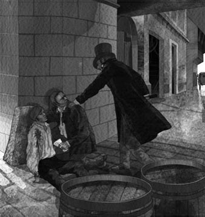
A hand came down hard on Valjean's shoulder.
Javert stood behind him. 'What are you doing here?' he said. 'Who is this man?'
Valjean stood up. 'Inspector Javert,' he said, 'I told you, I'm tired of running and hiding. You can arrest me, put me back in prison. I ask just one thing. Help me to take this young man home. That is all.'
'He's dead,' said Javert.
'No. Not yet. He lives in the marais with his grandfather. Look.' He showed Javert the piece of paper.
Javert read the address, then called to a carriage along the street. They put Marius's body on the back seat, and sat side by side on the front seat.
At the house of Marius's grandfather, a servant opened the door. She gave a little scream when she saw Marius in Valjean's arms. 'It's Monsieur Marius!'
'Take the boy in,' said Javert. 'I'm waiting for you here at the door.' His voice was different, uncertain.
Valjean looked at him, then carried Marius's body into the house. 'Call a doctor quickly,' he said to the servants. 'He was at the barricade and has two bullets still in him.' Then he came back downstairs and out into the street.
Javert was gone. Valjean looked up and down the street. Nothing. Nobody.
Down by the river seine, near the Place du Châtelet, Javert stood on the bridge, looking down into the water.
'What must I do?' he thought, but for the first time in his life he had no answer. Valjean's words at the barricade went through his head again and again. You're free to go... free to go... free to go.
'I can do one of two things,' Javert said to the river. 'I can arrest him, or I can not arrest him and say "You are free to go." But the law is the law – so I must arrest him. But he gave me my life – so I must give him his life. But the law is the law...'
And a voice in Javert's head said, You worked for the law all your life, but Jean Valjean is a better man than you are.
For a long time Javert stared down at the river, but the river gave him no answer to his question. Then he took off his hat, and put it carefully on the ground. A moment later, he stood high on the bridge, then fell, down into the dark river.
There was a splash, and that was all.
save v. to make someone safe from danger or harm 拯救
nearly adv. almost 几乎；差不多
smoke n. white, grey or black gas produced by burning （燃烧产生的）烟
pick up to lift someone up 抱起
rope n. very strong thick string 绳
secret adj. kept hidden from others 秘密的
bridge n. a structure built over a river 桥
splash n. the sound of something hitting water （水的）溅泼声
街垒
6
街垒
引言
对在麻厂街街垒的人们来说，这是一个漫漫长夜。他们听到的都是坏消息。越来越多的士兵进到城里，普通市民则呆在家里闭门不出——这一回他们不愿意和政府对抗。只有学生仍然留守在街垒，等待士兵的子弹——还有死亡。
这时候，一个新面孔来到了街垒，是个穿着深色衣服的大个子男人。马吕斯盯着他。他就是珂赛特的父亲，这一点他可以肯定。他到底是朋友还是敌人？只有老天知道。
在酒馆里，沙威也在等待死亡。义军对待密探都是一律枪毙，他是知道的。在酒馆里等待的时候，他是在回想自己的一生吗？法律总是正确的吗？一个罪犯能够改变，变成一个好人吗？沙威想到过这些问题吗？只有老天知道。
天亮了，枪声大作。嗒嗒嗒——嗒嗒嗒——嗒嗒嗒的枪声在街垒响起，伴随枪声的是喧哗和叫嚷，哭喊和尖叫。冉阿让救了安灼拉的命。有两名起义者死了。冉阿让把他们的尸体拖进酒馆时看到了沙威。沙威也看到了他。这时候，枪声停止了。
义军需要更多的子弹，伽弗洛什冲到了街垒前面。回来，伽弗洛什！他不理睬，反而开始唱起歌来。死去士兵的尸体躺在街道上。伽弗洛什从他们的包里拿出子弹，放进自己的包里。他个子小，动作快，还没等到士兵开始向他射击，他的包就已经差不多满了。回来，伽弗洛什！他的歌声更加嘹亮，可是第五颗子弹击中了他，他倒在了街道上。他动了一下，又倒了下去。伽弗洛什死了。一个在巴黎街头流浪的孩子，现在成了义军中的又一具尸体，他再也不会歌唱了。
到处都是枪管喷出的硝烟，什么都看不清楚。可是马吕斯跑到了街道上，抱起伽弗洛什，跑了回来。他把他瘦小的尸身放在酒馆的一张桌子上，哭了起来。
这将会是漫长的一天。
在街垒后面，安灼拉对着义军喊话：“他们很快就会再次进攻——我们一个人要对付六十个士兵。马吕斯和我是你们的指挥。伽弗洛什为我们找来了子弹，我们一定要好好利用这些子弹，战斗到最后一刻。”
“我们现在就处决了那个密探吧。”一个起义者说。
这时冉阿让开了口：“把他交给我吧。我可以为你们办这件事。我想亲手打死他。”
安灼拉看了看他：“你救了我的命，朋友。这个密探就交给你了。”
冉阿让带着沙威出了酒馆，来到酒馆后面的一条小巷。他掏出一把刀。
“哦，一把刀！”沙威说，“当然啦，这就是罪犯杀人的方式。来，杀了我吧，快点！”
冉阿让什么都没有说。他割断了绑着沙威胳膊和腿的绳子，然后站起身来，说道：
“你可以走了。”
沙威久久地望着他。他不明白这是怎么回事。
“我住在武人街。”冉阿让说，“我们下回再碰面的时候，你可以逮捕我。好了，走吧！”
沙威转身走了。冉阿让朝天开了一枪，然后回到了街垒。“我已经把他处决了。”他告诉安灼拉。
这时，第二轮进攻开始了。政府有更多的人，更多的枪，更多的子弹——学生们开始一个接着一个地死去。马吕斯站在街垒上，他是最后几个幸存者之一。但就在这时，一颗子弹击中了他，接着又是一颗。他倒下了。两只大手立刻把他抱了起来。“珂赛特。”马吕斯呢喃了一句，接着眼前一黑，昏了过去。
冉阿让对巴黎了如指掌，知道它的后街小巷，它的隐秘之地。这时，这些都派上了用场。他把马吕斯抱在怀里，也不知道他是死是活，只顾着穿街走巷，过每一个拐角都小心翼翼。夜幕降临，天空中弥漫着硝烟。冉阿让停下来喘口气。他在马吕斯的口袋里找到了一张纸。
把我的尸体带到我祖父家，他住在……
地址在玛莱区，离这儿不远。冉阿让再次把马吕斯抱了起来——这时，一只手用力按住了他的肩头。冉阿让回过头来。
站在他身后的是沙威。“你在这里干什么？”他说，“这个人是谁？”
冉阿让站起身来。“沙威督察，”他说，“我告诉过你，我已经厌倦了逃跑和躲藏。你可以逮捕我，把我送回监狱。我只有一个请求。帮我把这个年轻人送回家。就这一件事。”
“他死了。”沙威说。
“不，他还没死。他和祖父住在玛莱区。瞧。”他把那张纸给沙威看。
沙威看过地址后，叫住了街上一辆马车。他们把马吕斯放在后座上，然后并排坐在马车的前座上。
到了马吕斯祖父的家，一个仆人来开开门。她看到冉阿让怀里的马吕斯时，轻轻地惊呼了一声:“是马吕斯先生！”
“把这个孩子弄进屋去。”沙威说，“我在门口等你。”他的声音带着迟疑，与以往不同。
冉阿让看了他一眼，就抱着马吕斯进屋去了。“赶快去请一位大夫。”他对仆人们说，“他在街垒战斗，身上中了两颗子弹。”然后他下了楼，回到了街上。
沙威已经不在了。冉阿让往街上张望，什么都没瞧见。一个人都没有。
沙威在塞纳河近沙特雷广场的一段。他站在桥上，低头望着水面。
“我到底该怎么做呢？”他在心里问自己，但这一次，也是人生中第一次，他想不出答案。他脑海里一遍又一遍地回想起冉阿让在街垒说的话。你可以走了……可以走了……可以走了。
“我有两个选择。”沙威对着河水说，“我可以逮捕他，我也可以不逮捕他，并对他说‘你可以走了。’可法律终归是法律——所以我必须逮捕他。但他救过我的命——所以我也必须救他一命。可法律终归是法律……”
一个声音在沙威的头脑中说道：“你一辈子都在为法律服务，可冉阿让是一个比你更加正直的人。”
沙威久久地盯着河水，可是河水没有告诉他答案。后来，他摘下帽子，小心翼翼地把它放在地上。不一会儿，他高高地站到了桥栏杆上，接着跳了下去，落入漆黑的河水中。
桥下传来扑通一声，随后就什么动静也没有了。
7．Love and Death
7
Love and Death
FOREWORD
Marius lies for a long time between life and death, but months later, he is well again. Cosette visits him every day, and this of course helps him a lot. His grandfather is happy to have his grandson back, and is happy to have a new granddaughter in Cosette. The two young people marry, and live in the house of Marius's grandfather in the Marais.
There is a surprise for the young people. Cosette has money, a lot of money, Valjean tells them. She has six hundred thousand francs. This pleases Marius's grandfather very much, but the young people are only interested in love, not in money.
Where does it come from, this money? Years ago, when Valjean was Monsieur Madeleine with a factory, he was a rich man. Before he left Montreuil, he took his money and the bishop's candlesticks to a secret place. When he needs money, he goes back there.
Now this money is for Cosette, and the candlesticks stand in Valjean's house in the Rue de l'Homme-Armé. They look very fine, and Toussaint cleans them every day.
A new life begins for everybody, but there are still secrets from the past, and Valjean wants to tell them. He feels old and tired. Death is coming for him at last, he feels. He calls Cosette and Marius to his bedside.
'Listen, dearest Cosette, to the story of your mother,' he says. Cosette hears the story of Fantine's sad life. She learns that Valjean is not her real father, but in her life there is only one father, and that is Valjean, she tells him.
'Come closer, my children,' he says. 'I love you dearly, and I die happy. Come closer, and take my hands.'
Cosette and Marius are by his bed, holding his hands and crying. His great hands are still, and do not move again. He lies with his head turned up to the sky, and the light from the bishop's candlesticks falls upon his face.
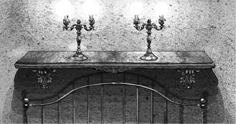
interested adj. giving a lot of attention 感兴趣的；关心的
爱与死
7
爱与死
引言
马吕斯在生死线上挣扎了很长一段时间，不过几个月后，他终于康复了。珂赛特每天都来探望他，这当然对他的复原起了很大作用。看到孙子又回来了，马吕斯的祖父十分开心，而看到自己新添了珂赛特这样一位孙媳妇，老人更是高兴。两个年轻人结了婚，住在玛莱区马吕斯祖父的房子里。
这两个年轻人得知了一个意外的消息。冉阿让告诉他们，珂赛特有钱了，很大一笔钱。她拥有60万法郎。这让马吕斯的祖父十分高兴，不过这两个年轻人心里想的只有爱，并不在乎钱。
这笔钱是从哪儿来的呢？许多年前，在冉阿让还是开工厂的马德兰先生时，他是一个富有的人。离开蒙特勒伊之前，他把这笔钱和主教的烛台藏到了一个秘密的地方。他需要钱的时候，就到那里去取。
现在这笔钱是珂赛特的了，烛台则摆在武人街冉阿让的家里。它们看上去十分漂亮，杜桑每天都要把它们擦拭一番。
每个人都开始了新的生活，不过还有些过去的秘密，冉阿让想要告诉他们。他觉得自己老了，累了。他觉得死神终于要找上门来了。他把珂赛特和马吕斯叫到了自己的床边。
“听好了，最亲爱的珂赛特，这是你妈妈的故事。”他说。珂赛特听到了芳汀一生悲惨的遭遇。她知道了冉阿让不是他的亲生父亲，可她对冉阿让说，她这辈子只有一个父亲，那就是冉阿让。
“靠近点，我的孩子们。”他说，“我非常爱你们，我现在可以高兴地闭眼了。靠近点，抓住我的手。”
珂赛特和马吕斯偎依在他的床边，抓住他的手哭了起来。他的一双大手僵住了，再也不动了。他仰面躺在那里，主教的烛台上燃着的烛光照在他的脸上。
Activities: Before Reading
ACTIVITIES
Before Reading
1 Read the back cover and the introduction of the book. How much do you know now about the story? Tick one box for each sentence.
1) Jean Valjean was in prison for nineteen years.
YES □／NO □
2) Javert wants to help Valjean in his new life.
YES □／NO □
3) The poor people in France are unhappy.
YES □／NO □
4) Fantine has a son called Marius.
YES □／NO □
5) Life is easy for everyone in France in 1815.
YES □／NO □
6) Gavroche lives with his mother and father.
YES □／NO □
7) In the French Revolution there were barricades in the streets of Paris.
YES □／NO □
2 What is going to happen to the people in this story? Can you guess? Choose words to complete these sentences.
1) Jean Valjean marries / does not marry Fantine.
2) Inspector Javert sends / does not send Jean Valjean back to prison.
3) By the end of the story Jean Valjean is very rich / still poor.
4) Marius / Gavroche dies in the rebellion.
5) Fantine dies when she is very old / still young.
6) When she is a young woman, Cosette has a happy / sad life.
Activities: After Reading
ACTIVITIES
After Reading
1 Who is who in this story? Choose a name to complete the first parts of the sentences. Then match the two parts of sentences together, and choose the best linking word.
Bishop of Digne / Cosette / Fantine / Gavroche / Javert /
Jean Valjean / Marius / Monsieur Madeleine / Thénardiers
First parts of sentences
1) _____ hated all criminals,...
2) _____ wanted to marry Cosette very much,...
3) _____ had a factory in Montreuil,...
4) The _____ often helped poor, hungry people,...
5) _____ never knew her mother...
6) _____ wanted to take care of Fantine's daughter,...
7) The _____ were not kind to little Cosette,...
8) _____ was a child, only eleven or twelve years old,...
9) _____ cut off her hair and sold it...
Second parts of sentences
10) so / because she lived with the Thénardier family.
11) when / before a soldier shot him and killed him.
12) but / so he went to his grandfather and asked for money.
13) and / but he gave Valjean dinner and a bed for the night.
14) but / and he wanted to put Valjean in prison again.
15) and / but they asked Fantine for more money all the time.
16) because / but she wanted her daughter to have a warm dress for winter.
17) because / so he took her away from the Thénardiers.
18) so / but people in that town knew nothing about him.
2 Here are three people from the story talking or writing to someone. Complete the passages with words from this list (one word for each gap). Then say who is speaking or writing, and to whom.
asking, cold, daughter, dress, family, five, francs, girl, grandfather, hands, know, letter, marry, No, nothing, took, warm
1) 'Why are you here? You only come to see your poor old_____ when you want something. And now you're _____ for money because you want to _____ someone. Who is this_____? Who's in her _____ ? You know _____ about her. Well, young man, the answer is "_____"!'
2) 'I don't want my _____ to be _____ in the winter, so I am sending you ten _____. Please buy Cosette a new _____ with this money – something nice and _____.'
3) 'Yes, I _____ the letter to number seven. No, I didn't put it into her _____, I gave it to a man. No, I don't _____ his name, but he knew all about it. He said, "ah, that's the_____ for Cosette." He was all right – he gave me _____ francs. That's a lot of money!'
3 Complete this crossword with words from the story, using the clues below to help you.
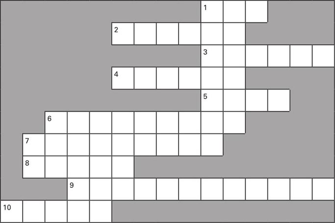
1) Gavroche told Marius that Javert was a police _____.
2) A _____ cut off Fantine's hair and paid her ten francs.
3) The bishop's candlesticks were made of _____.
4) Jean Valjean stole some _____ from the bishop.
5) Marius fell in _____ with Cosette.
6) A _____ is when people fight against the government of a country.
7) The students built a _____ in the street.
8) The Thénardiers were very _____ to little Cosette.
9) The bishop gave the two _____ to Jean Valjean.
10) Javert knew Jean Valjean because he was a _____ at the prison in Toulon when Valjean was there.
4 There are two hidden words in the crossword above. What are they? Use them to make a sentence about Jean Valjean.
5 Here is the conversation between Marius and Cosette when Marius first opens his eyes in his grandfather's house. Put their conversation in the right order, and write in the speakers' names. Cosette speaks first (number 3).
1) _____ 'He doesn't hate you. He loves you very much. He likes me too! and he wants me to be his granddaughter!'
2) _____ 'That's the best news of my life! Kiss me, Cosette!'
3) Cosette 'Oh, Marius! How are you feeling, my dearest?'
4) _____ 'Granddaughter? You mean – we can get married?'
5) _____ 'You're in your grandfather's house.'
6) _____ 'I'm... I'm all right, I think. But where am i?'
7) _____ 'Of course not! You can have a kiss when you're better – and not before!'
8) _____ 'my grandfather! Why? How? He hates me!'
9) _____ 'Yes, Marius, we can. Isn't that wonderful?'
6 What did you think about the people in this story? Choose some names, and finish the sentences in your own words.
Bishop of Digne / Cosette / Fantine / Gavroche / Javert / Jean Valjean / Marius / Monsieur Madeleine / the Thénardiers
1) I felt sorry for _____ because ________.
2) I liked _____ because ________.
3) I was angry with _____ when ________.
4) _____ was right to __________.
5) _____ was wrong to __________.
封底
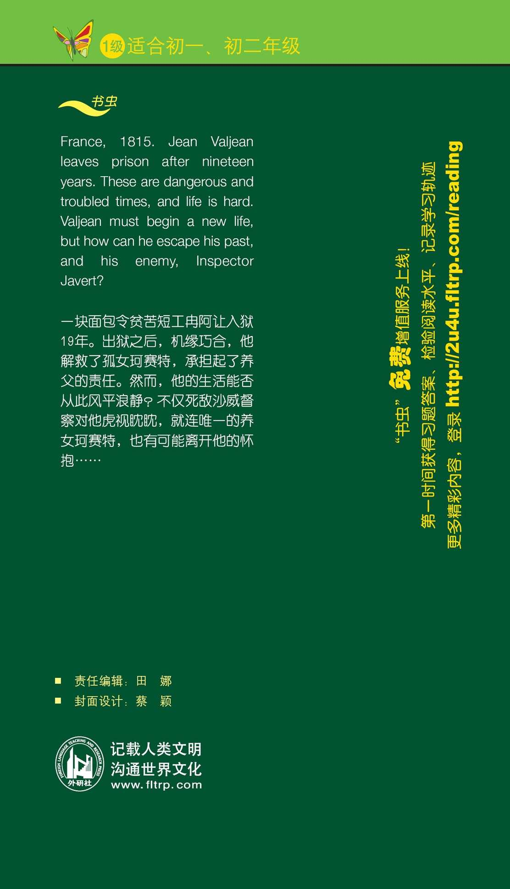